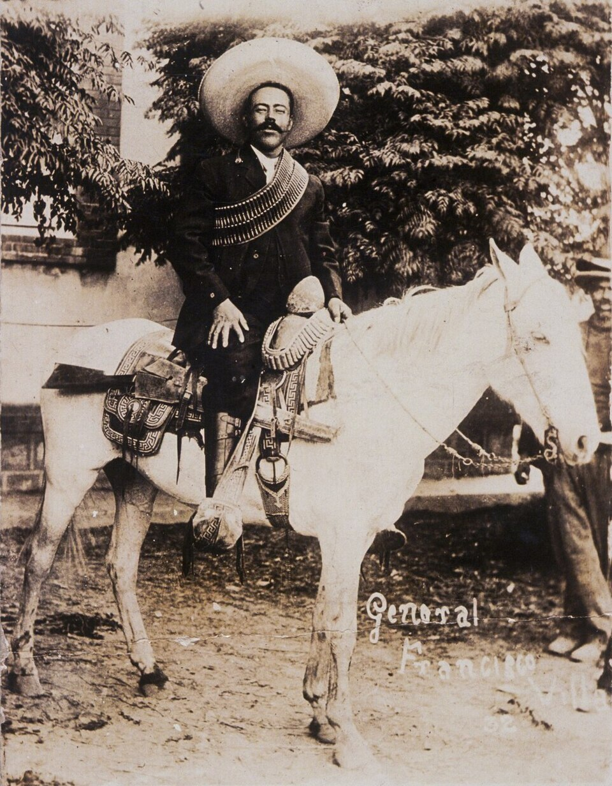

Una descarga cerrada acaba con la vida de Francisco Villa en las calles de Parral
El automóvil del general fue acribillado esta mañana desde una casa de la calle Gabino Barreda, cuando salía rumbo a su hacienda de Canutillo. Murieron con él su secretario y varios hombres de su escolta. Se ignora quién ordenó la emboscada.

Eran cerca de las ocho de la mañana cuando el automóvil Dodge que manejaba el propio Francisco Villa entró a la bocacalle de Gabino Barreda, en el centro de esta ciudad. De una casa de la esquina partió entonces una descarga cerrada: decenas de balas barrieron el coche en unos instantes, lo hicieron subirse a la banqueta y estrellarse contra un árbol. Dentro quedaron los cuerpos del general, atravesado por varios disparos, y de su secretario, el coronel Miguel Trillo. Otros hombres de la escolta murieron sobre el pavimento; uno de ellos, mal herido, alcanzó a repeler el fuego y a escapar hacia el río.
Villa había pasado la noche en Parral y volvía a Canutillo, la hacienda de Durango que el gobierno le entregó hace tres años a cambio de deponer las armas. Allí vivía como agricultor: sembraba trigo, compró tractores, levantó una escuela para los hijos de sus hombres. Viajaba con escolta corta, apenas media docena de acompañantes, confiado en el indulto y en su propia fama. Los agresores, que según los vecinos llevaban días apostados en la casa alquilada de la esquina, dispararon con rifles y pistolas hasta vaciar las armas, remataron a corta distancia y huyeron a caballo. Nadie les cerró el paso.
Con Villa muere el hombre que llenó una década entera de la vida mexicana. Arriero, prófugo, guerrillero, fue con su División del Norte el brazo militar más formidable de la Revolución: suyas fueron las cargas de Torreón y de Zacatecas. Conoció la gloria de entrar a la capital y la derrota de Celaya; atacó Columbus, en territorio americano, y burló durante un año a la expedición que los Estados Unidos mandaron a cazarlo. Se rindió apenas en 1920, cuando ya no quedaba contra quién pelear. Tenía, según se cuenta, tantas vidas como enemigos, y esta mañana se le acabaron las vidas antes que los enemigos.
En Parral, donde el general era querido y temido por igual, la noticia vació los comercios y llenó las aceras. La gente se acercó a mirar el automóvil agujereado, contó los impactos, se descubrió al paso de los cuerpos. Cuentan que Villa había dicho más de una vez que quería morir ya viejo, en su cama, y que Parral le gustaba hasta para eso. Los restos fueron llevados al hotel Hidalgo, donde se les vela entre cirios; mañana serán sepultados en el panteón de esta ciudad. Ante la caja desfilan campesinos, viudas de soldados y muchachos que solo lo conocieron de oídas, como se conoce a los personajes de los corridos.
¿Quién ordenó la emboscada? La pregunta corre de boca en boca y este diario no puede responderla. Un crimen tan paciente y tan bien ejecutado no parece obra del simple rencor: hizo falta dinero, información y la seguridad de una fuga limpia. Se murmuran nombres, se recuerdan agravios viejos y ambiciones nuevas, se hace notar que el general muerto hablaba últimamente de política y que a la República se le acerca una sucesión presidencial. Nada de eso constituye prueba y aquí no se estampará ninguna. Quede escrito solamente que Francisco Villa, a quien no pudieron matar mil combates, fue muerto a mansalva una mañana de julio, en una esquina.